Properties and value
Diamond is the only gemstone mined by large mining companies. Sapphires, rubies and opals are mostly mined by small prospectors. Diamond is pure carbon, cubic, with hardness 10, specific gravity 3.5 and an lustre. It grows as octahedra, cubes and macles. Most diamonds are colourless or slightly yellow or brown, but diamond can be any colour. Its name comes from "adamas", unconquerable, but it cleaves easily: hit it with a steel hammer and it shatters. slides 5 and 13 lecture recording, 6 Nov
Gem-quality diamonds are transparent and have no visible inclusions. Industrial diamonds are partly to completely opaque, with many inclusions. is black, opaque industrial diamond, used in drill bits and grinding wheels. slide 6 lecture recording, 6 Nov
The market has changed in the last three years. Factories now make gem-quality synthetic diamonds up to 5 carats that are cheaper than natural stones. Most stones from a mine are 0.5 to 3 carats, so these now compete with synthetics. A synthetic stone has no inclusions; a natural stone always has some. So mine profits now depend on large stones (100 carats and up) and on rare colours. slide 3 lecture recording, 6 Nov
Value depends on the 4 Cs: carat (1 carat = 0.2 g, about 6.5 mm across; 10 carats is 13.6 mm and 100 carats 30.3 mm), cut (round brilliant is best), colour (strong colours are most valuable) and clarity. Value does not rise in a straight line with size: above 10 carats it rises exponentially. slide 7
Price one caratpick a colour
Minimum US$ per carat (0.2 g) for strongly coloured diamonds, slide 8. The bars use a log scale so that all of them fit.
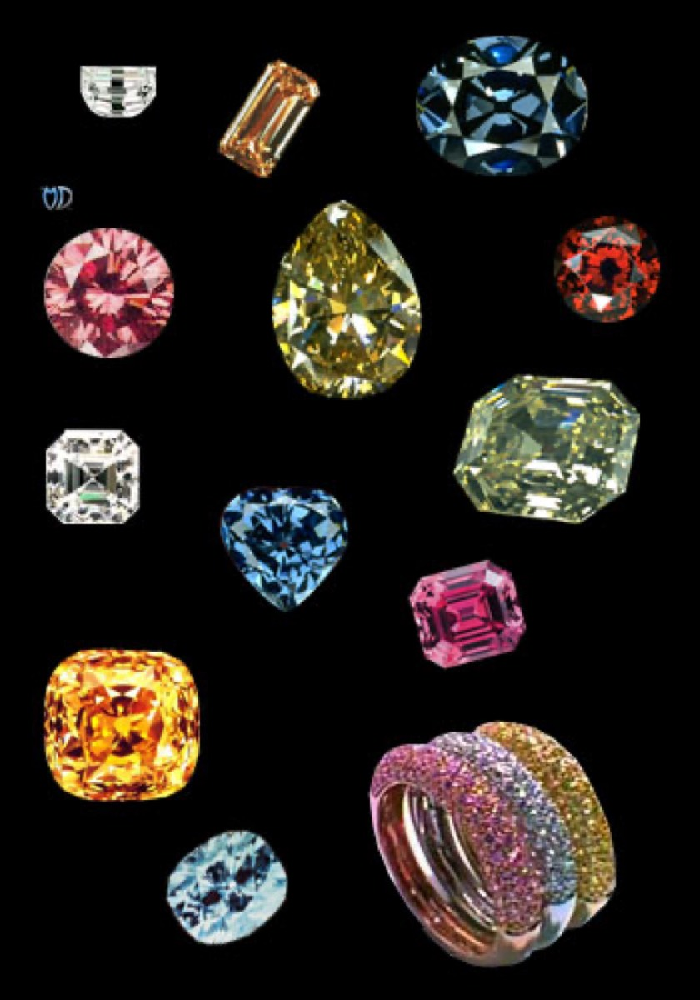
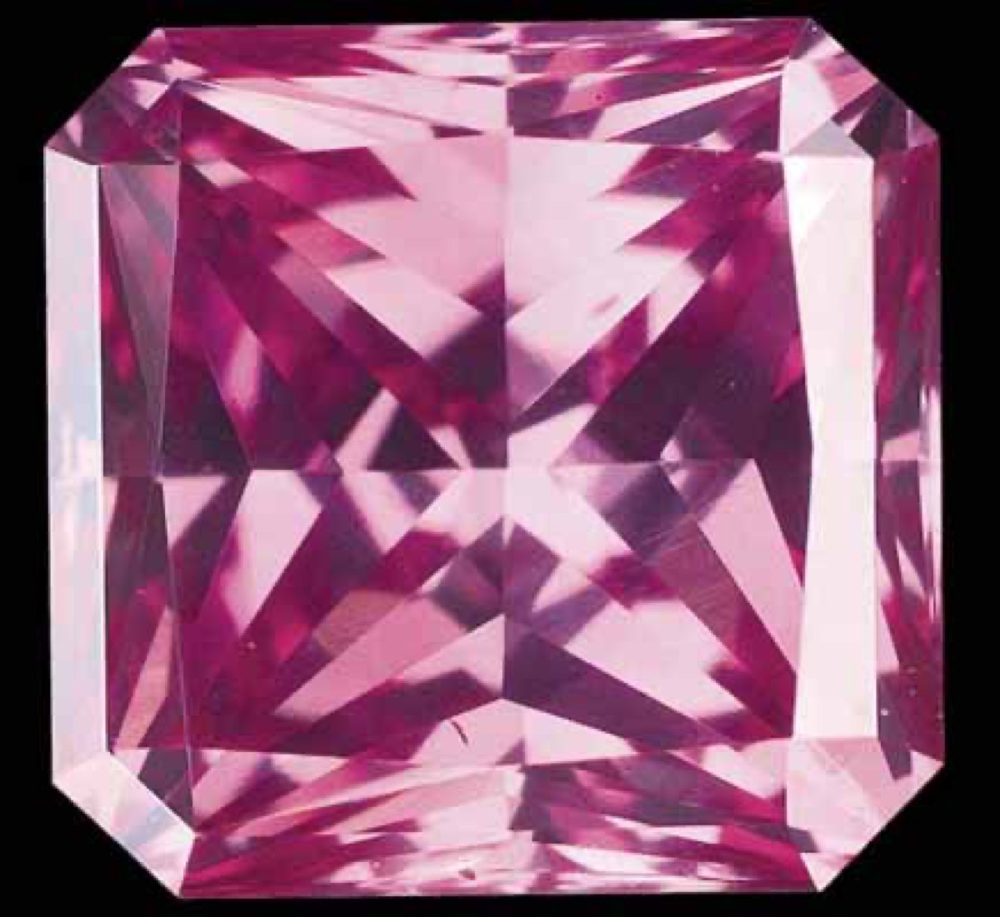
Crystal forms and types
Diamond crystallises strongly, so it almost always occurs as crystals. Octahedra are the most common form, often with stepped faces. Cubes are common, especially in West Africa. Macles are flattened octahedra (twins) with sharp edges; they are used as blades for microsurgery, because they are already sharp and do not contaminate the patient. slide 10 lecture recording, 6 Nov
There are two main types. Type I diamonds contain nitrogen in an aggregated state, which makes them yellow or brown. Type II diamonds have little or no nitrogen and are colourless to white. Two other carbon forms occur with diamond. is a black, porous, fine-grained aggregate, usually as rounded balls, found only in old (palaeo)alluvial deposits. is also a black aggregate, but has crystal faces and is found only in kimberlite and lamproite. slides 11 and 12 lecture recording, 6 Nov
Name the form0 / 5
- Diamond: adamantine lustre, crystal forms (octahedron, cube, macle), and it bounces if dropped because it is very elastic.
- A natural stone always has some inclusions; a synthetic one has none.
- Black, porous carbon: carbonado (rounded, alluvial) or framesite (crystal faces, in kimberlite).
Where diamonds are mined
Diamond deposits are very low grade. The Kimberley mine produced 3 t of diamond from 24 Mt of ore: 1 part in 8 million. World production is about 100 t a year, and half of it is industrial. Most diamond used today is synthetic. The host rocks are kimberlite and lamproite, found where the continental crust is thick and has been domed up and fractured deeply. slide 13 lecture recording, 6 Nov
Who mines diamonds (2025)
Millions of carats, slide 15.
Russia dominates, followed by Africa. In 2016, Australia was fourth, all from Argyle, but Argyle closed in 2020 and Australia now has no operating diamond mine. Canada was a big producer by value in 2021, but its Arctic mines are expensive and production has dropped. slides 15 to 17 lecture recording, 6 Nov
Famous mines
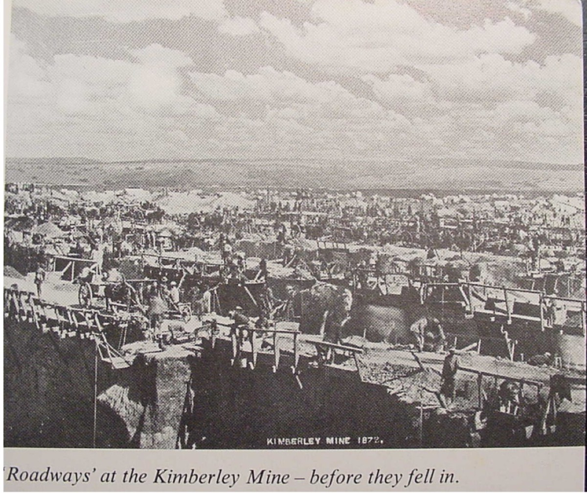
Describe how the pit is organised. Who do you think was mining here?
Show what I see
- A huge pit cut into many small square blocks at different levels, with ropes, roads and walkways across it.
Each block was a separate claim, about 5 by 5 m, worked by an individual prospector. Cecil Rhodes later bought and joined them into one company, De Beers (named after the farm where the diamonds were found). The weathered "yellow ground" at the top was easy to dig, but the fresh "blue ground" (blue kimberlite) below was very hard to process until a metallurgist solved it. This became the Big Hole. slides 18 and 19 lecture recording, 6 Nov
Kimberley, South Africa, is where primary diamond deposits were first found and described, where the word kimberlite comes from, and where De Beers began. It was the world's main producer from 1891 to about 1920. slide 19
Canada: Diavik and Ekati are kimberlite mines at Lac de Gras in the Northwest Territories, about 200 km south of the Arctic Circle. Diavik has three pipes on an island, produces about 8 million carats a year, and started in 2003. The country rocks are 2700 to 2500 Ma, but the kimberlite is only 55 Ma. Ekati's pipes are 45 to 62 Ma. The two geologists who found Ekati, Chuck Fipke and Stewart Blusson, took over the leases when their company wanted to give them up, then sold 80% to BHP and kept 10% each. slides 20 to 23 lecture recording, 6 Nov
Mir, Siberia, works at −50 °C in winter. More than 75% of its production is gem quality, and it produces many stones over 100 carats. slide 24
Southern Africa has Kimberley and Premier, the Botswana mines (Orapa, Jwaneng, Letlhakane), rich alluvial deposits in the Congo, and marine deposits off western South Africa and Namibia. Pipes eroded over the last 60 million years and rivers such as the Vaal carried the diamonds to the sea. Jwaneng in Botswana is the richest mine by value: 9.3 Mt of ore a year at about 1.25 carats/t, from three Triassic kimberlite pipes in Proterozoic rocks, found by heavy mineral sampling in 1974. slides 25 and 26 lecture recording, 6 Nov
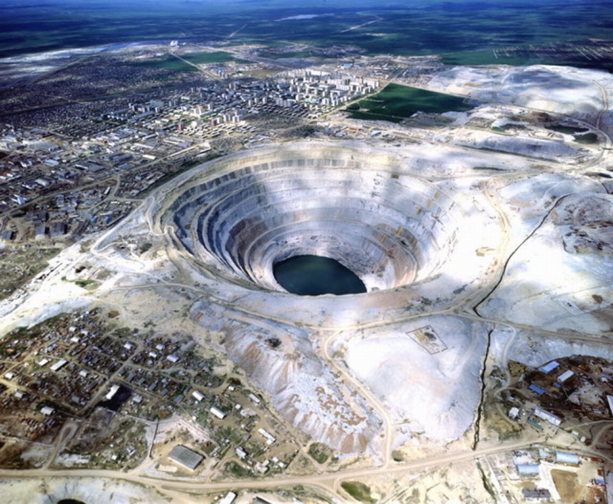
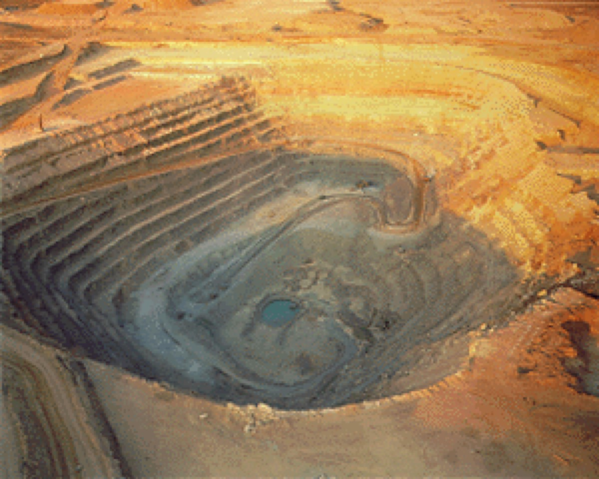
Argyle, in the Kimberley region of WA, was the world's largest producer by volume (35 million carats a year at about 7 carats/t), but only 5% was gem quality (most mines have about 20%). It produced 90 to 95% of the world's pink and red diamonds. It is an olivine lamproite, not a kimberlite. De Beers had once given up the area because its model said diamonds only occur in kimberlite. The lecturer's lesson: do not trust a model too much. Discovered in 1979 by following diamonds up the alluvial gravels, opened in 1985, closed in 2020. slides 27 to 29 lecture recording, 6 Nov
There are two economic types of deposit: (1) large tonnage with few gem stones, but with a unique colour (Argyle pinks) or unique size (Premier); and (2) moderate to large tonnage with a moderate (Jwaneng) to high (Mir) proportion of gems. slide 30
Kimberlite and lamproite
Almost all diamonds come from a volatile-rich, clast-rich volcanic pipe (a ). The rock is usually kimberlite; lamproite is much rarer. The pipes are mostly clasts, in some cases more than 95%: fragments of country rock and of the mantle (xenoliths), plus broken crystals, carbonate and diamonds. The diamonds are accidental , carried up from the mantle, usually inside megacrysts and mantle xenoliths. The pipes weather faster than the rocks around them, so on the surface they are low, round depressions, sometimes lakes. slide 32 lecture recording, 6 Nov
Kimberlite is a volatile-rich, potassic, ultramafic rock made mostly of serpentinised olivine, with phlogopite, pyroxenes, carbonate and chromite. The key accessory minerals, which are also the indicator minerals for exploration, are pyrope garnet, picroilmenite, perovskite, monticellite and rutile. It has an uneven texture of large mantle crystals (macrocrysts) in a fine-grained matrix. Diamond is only a very rare part of it. slides 33 and 34 lecture recording, 6 Nov
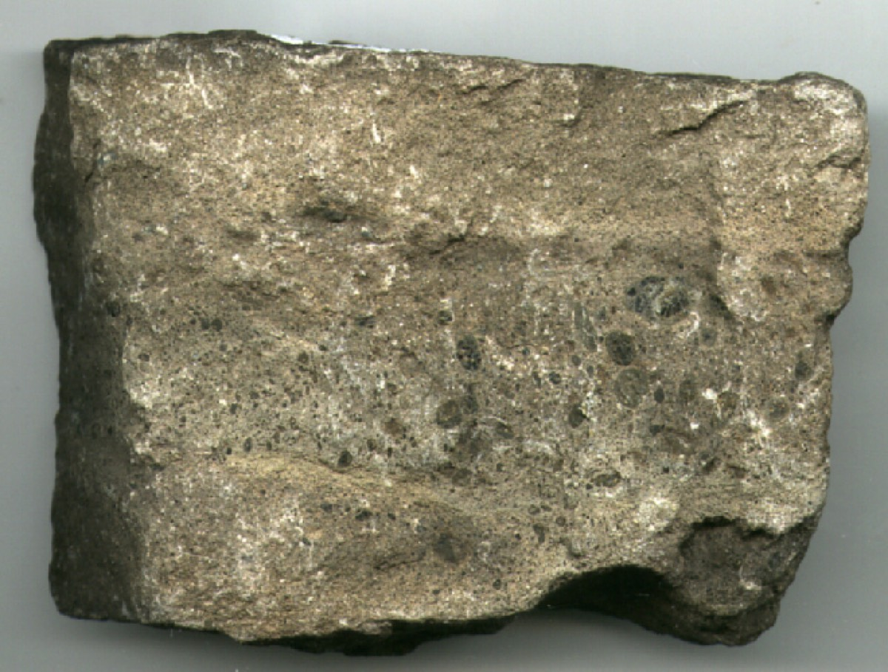
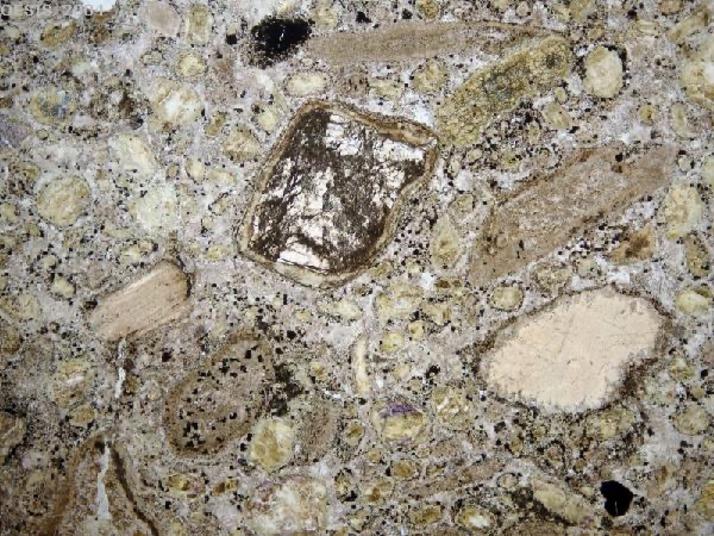
Describe the texture. Is this a lava that crystallised evenly, or something else?
Show what I see
- Many fragments of different sizes and shapes: rounded crystals and angular rock pieces.
- A fine-grained matrix, mostly carbonate, between them.
It is fragmental: a volcaniclastic rock full of mantle crystals and country rock fragments. That is typical of kimberlite. The lecturer passed around kimberlite from the Kimberley mine and a garnet peridotite mantle xenolith from Bultfontein. slide 33 lecture recording, 6 Nov
Lamproite is strongly porphyritic, with phenocrysts of biotite (phlogopite), amphibole, pyroxene, olivine and leucite. It is rich in potassium and magnesium and has unusual accessory minerals: K-Ti-richterite, priderite, wadeite and jeppeite. It is less fragmental than kimberlite and usually rich in mica. slide 35 lecture recording, 6 Nov
Kimberlite or lamproite?0 / 4
Pipes and how they erupt
Kimberlite magma rises from more than 150 km depth along deep fractures in the lithosphere, at up to 8 km/h (2.3 m/s); the lecturer said it can reach the surface in about a day. It is very rich in CO₂ gas, so the last stage is an explosive eruption, like opening a shaken can of soft drink. The fast ascent stops the diamond turning into graphite. slide 39 lecture recording, 6 Nov
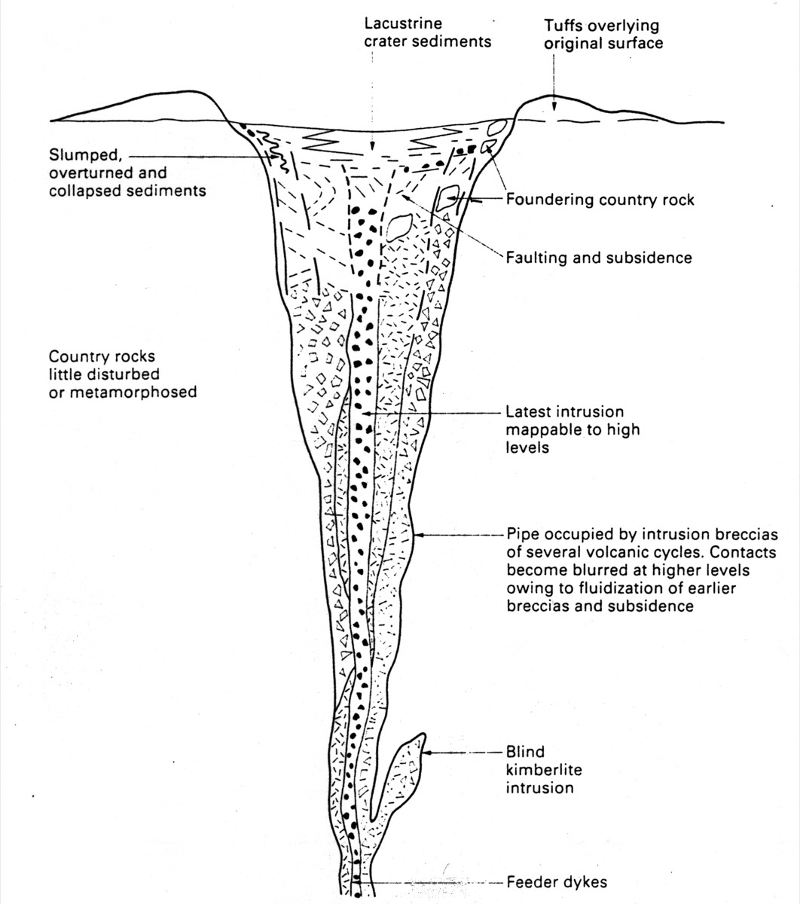
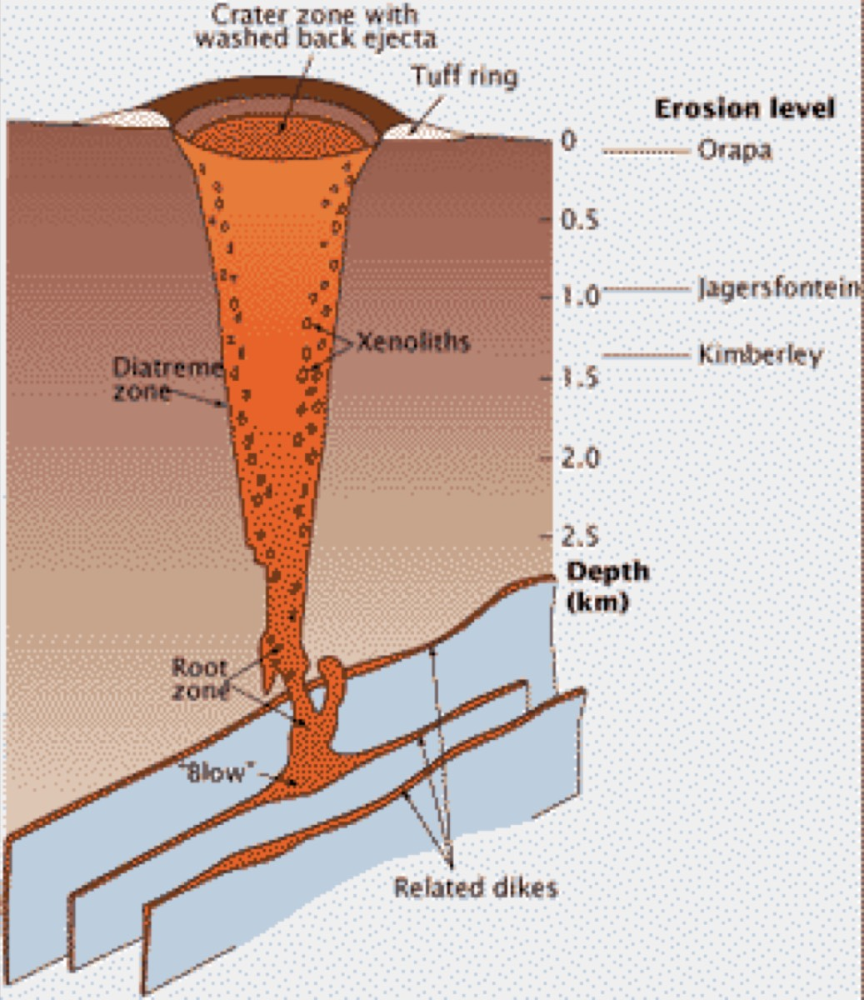
The crater often fills with water to form a lake; lake sediments at Orapa preserved beautiful fossils. Some intrusions never reach the surface ("blind" kimberlites). Every pipe is different in shape, extent, depth of erosion, grade and type of clasts. Where the top of a pipe has been eroded, as at Kimberley, the diamonds went into rivers and the sea. slides 36 and 40 lecture recording, 6 Nov
How diamonds form
Diamond is at the surface: heated with oxygen, it turns into graphite. The traditional view is that diamonds crystallise at about 1100 °C at 150 to 200 km depth. More recent work shows that diamond can also form at shallower depths in subduction zones, because the pressure can be high enough there at low temperature. slide 37 lecture recording, 6 Nov
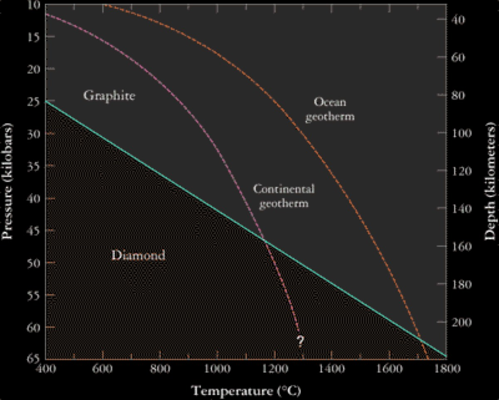
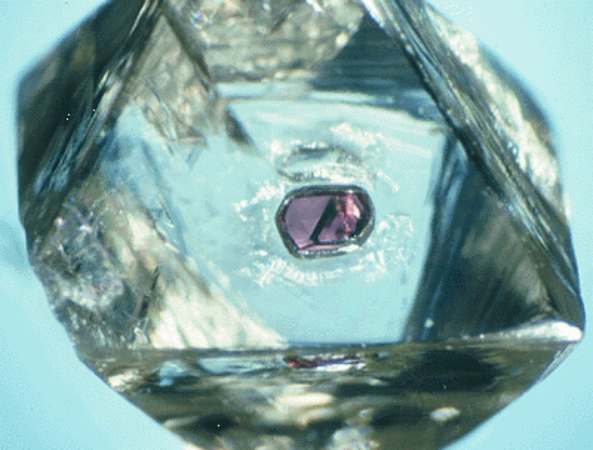
What is the purple inclusion, and what can it tell you?
Show what I see
- A clear diamond octahedron with one small purple-red crystal trapped inside.
It is a pyrope garnet that grew with the diamond. Inclusions, the nitrogen aggregation state and C and N isotopes tell you the conditions of diamond growth. K-bearing inclusions such as clinopyroxene can be dated by Ar-Ar. Most diamonds are older than 1500 Ma (the lecturer said about 2 Ga), even though many pipes that carry them are much younger (some only 15 Ma). Why most kimberlites are young is still unknown. slide 38 lecture recording, 6 Nov
Too slow an ascent is fatal: in southern Spain, geologists found perfect graphite pseudomorphs after diamond. The diamonds formed, but the magma rose too slowly and they turned into graphite. Try the animation at the top of the page. slide 37 lecture recording, 6 Nov
NSW and subduction diamonds
NSW has no craton. It is mostly Palaeozoic fold belts, Permo-Triassic basins and Cretaceous sediments. Still, diamonds are found. The most productive area is Copeton, near Inverell, with more than 0.5 million carats, mostly from palaeoalluvial deposits. Their inclusions show high pressure but low temperature (below 400 °C): they probably formed by subduction in the New England Fold Belt. They are very tough, because they are heavily twinned, so diamond cutters disliked them. slide 42 lecture recording, 6 Nov
Almost every sapphire field in eastern Australia has produced a few diamonds (Rubyvale in Queensland, Black Springs near Oberon), because the alkali basalts that carried up the sapphires also picked up diamonds. Deep leads (old river gravels buried by basalt) near Capertee were mined for diamonds, sapphires and gold. slides 43 and 44 lecture recording, 6 Nov
Subduction diamonds form when oceanic crust, which contains carbonate, is subducted to high pressure at low temperature. Signs: inclusions, Na-rich garnet in eclogite, nearby eclogite and blueschist, and low-silica alkaline basalt diatremes (nephelinite, basanite). Indicator minerals: coesite, grossular garnet, Na-rich pyroxene and corundum. No commercial deposit of subduction diamonds has been found yet; the stones tend to be small. slides 45 and 46 lecture recording, 6 Nov
Exploring for diamonds
Most kimberlites and lamproites that erupted through Archean to Proterozoic crust contain some diamonds, but of more than 5000 known kimberlites, only about 25 are economic. Kimberlites through Palaeozoic crust (such as those in eastern NSW) do not contain diamonds: they came from only 60 to 70 km depth, outside the . So use the minerals of the mantle xenoliths (thermobarometry from mineral pairs) to find the depth they came from: you need more than 140 km. slide 47 lecture recording, 6 Nov
General steps: (1) use satellite images or air photos to find where major lineaments cross and where there are low, round depressions; (2) sample stream sediments for indicator minerals: pyrope garnet, picroilmenite and perovskite in cratons, or grossular garnet, corundum, rutile and clinopyroxene outside cratons; (3) for lamproites, which are rich in potassium, use radiometrics. Outside cratons, look for fold belts with a fore-arc at depth and young alkali basalt diatremes; look for high-Na garnet or garnet with rutile exsolution. If you find graphite pseudomorphs after diamond, leave: the magma rose too slowly. Micro-diamonds alone do not make a deposit. slides 48 and 49 lecture recording, 6 Nov
Keep exploring or walk away?0 / 5
Cempaka, Kalimantan
Cempaka is a palaeoalluvial diamond deposit in south-east Kalimantan (Borneo), near Banjarmasin. Kalimantan has produced diamonds since about 300 AD. The nearest cratons are more than 2000 km away. One idea (Griffin et al. 2001) was that glaciers carried the diamonds from the Yangtze Craton. The lecturer's team (White et al. 2016) showed that this is unlikely. slides 50 to 52 lecture recording, 6 Nov
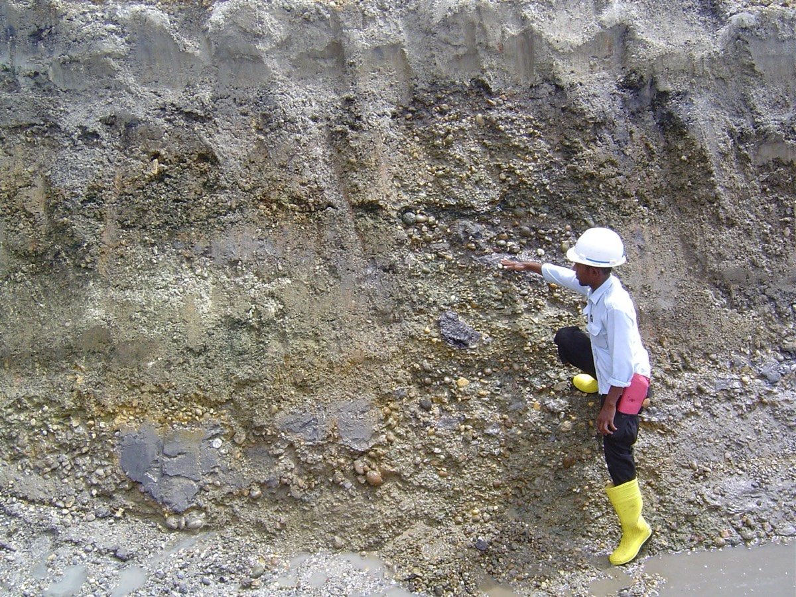
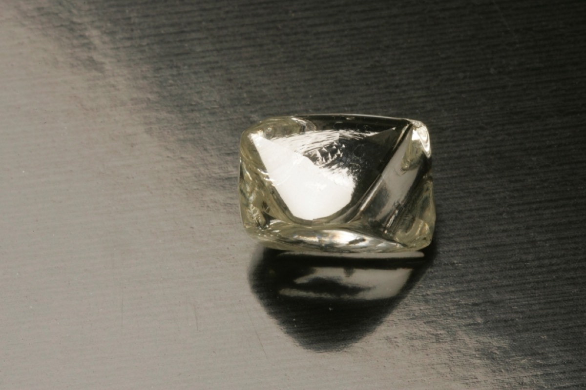
Look at the edges of the diamond in B. Did it travel 2000 km with a glacier?
Show what I see
- A: a gravel layer about 5 m thick under clay and sand: the diamond-bearing layer.
- B: a crystal with sharp edges and well-preserved faces.
Millions of carats of sharp, angular diamonds with delicate surface features cannot have been carried 2000 km; they would be rounded. There are also no kimberlite indicator minerals, and zircons in the gravels date to two Cretaceous eruptions with a lamproite-like chemistry. So the source is probably a local lamproite. slides 52 to 57 lecture recording, 6 Nov
Mining is simple: strip the cover down to the gravel layer with a digger and a truck. Some stones are coated diamonds: industrial-looking outside, gem quality inside, which shows that they left and re-entered the diamond stability field. slides 54 and 57 lecture recording, 6 Nov
Giant stones and wrap-up
The Cullinan diamond, found at the Premier mine near Pretoria in 1905, is the largest gem diamond ever found: 3106.75 carats (about 0.62 kg). It was cut into 11 large stones, including the Great Star of Africa (530.2 carats) in the royal sceptre. One face is a cleavage surface, so it is only part of a larger crystal; the rest has never been found. slides 58 and 59 lecture recording, 6 Nov
Karowe in Botswana was found by De Beers in 1969 but never mined, because De Beers thought it was uneconomic. A small Canadian company, Lucara, bought it in 2009 for US$49 million and began mining in 2012. It has sold more than 216 diamonds for over US$1 million each, including the 813 carat Constellation for US$61.1 million, and found the 2492 carat stone in 2024. Its dividends since 2014 (more than US$271 million) exceed the cost of buying and building the mine. slides 2, 60 to 63 lecture recording, 6 Nov
- Diamond: C, cubic, H 10, SG 3.5, adamantine; octahedra, cubes, macles; Type I (N, yellow-brown), Type II (no N, colourless).
- Forms at ~1100 °C, 150 to 200 km (window > 140 km); metastable at the surface; fast CO₂-driven ascent (up to 8 km/h) saves it.
- Hosts: kimberlite (most) and lamproite (Argyle); diamonds are xenocrysts; indicator minerals pyrope, picroilmenite.
- Only ~25 of > 5000 kimberlites are economic; Palaeozoic crust = no diamonds.
- Russia leads production; Australia has no operating mine since Argyle closed (2020).
Which deposit?0 / 6
Self-test
Answer each question out loud or on paper before you open it. If your answer was right, claim the ounces.
Glossary and flashcards
These are terms that the lecture expects you to know, or only explains briefly. Tap a dotted word in the text to see its meaning.
Flashcards
Where this goes next
Lecture 21 returns to sedimentary deposits: banded iron formations and manganese. Compare the kimberlites here with the carbonatites of Lecture 19: both are deep, volatile-rich, alkaline magmas that reach the surface in old, thick continents.